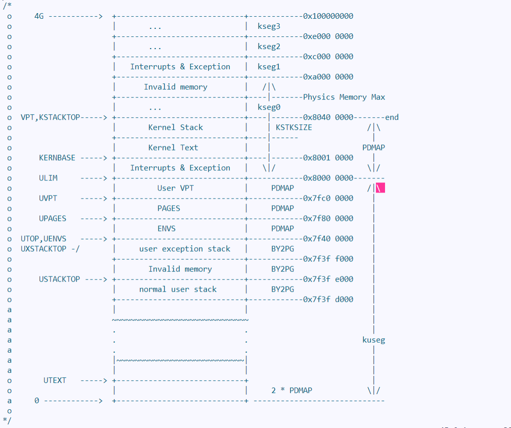

OS - Lab4
系统调用与 fork
课下
Lab4 实验报告
一. 思考题
Thinking 4.1
思考并回答下面的问题：
内核在保存现场的时候是如何避免破坏通用寄存器的？
系统陷入内核调用后可以直接从当时的
$a0-$a3参数寄存器中得到用户调用msyscall留下的信息吗？我们是怎么做到让
sys开头的函数 “认为” 我们提供了和用户调用msyscall时同样的参数的？内核处理系统调用的过程对
Trapframe做了哪些更改？这种修改对应的用户态的变化是？
答：
内核在保存现场时，通过
SAVE_ALL宏函数利用$k0, $k1这两个不需要保护的寄存器，获取应该使用的$sp值，然后首先将$sp存入栈空间，再利用$sp将所有寄存器的值入栈；这样在退出异常（从内核返回）时可以进行恢复不可以，在陷入内核态时，系统取得系统调用号时，已经将系统调用号存入
$a01
2
3
4
5
6
7……
/* TODO: 将系统调用号“复制”入寄存器$a0 */
lw a0, TF_REG4(sp)
addiu a0, a0, -__SYSCALL_BASE # a0 <- “相对”系统调用号
……而
$a1-$a3寄存器寄存器虽然没被使用，因此其保存的值没有改变；但是系统并没有要求它们不变的，在之后插入某些功能时可能使用到了$a1-$a3寄存器，从而导致其内部保存的值的改变；因此正确的做法应该是$a0-$a3从栈中获取，这样可以防止其他程序使用这四个寄存器带来的问题我们在
lib/syscall.S中先从内核栈中取出$a0-$a3的值，在从用户栈中取出后两个参数，将它们的值存入异常栈，从而将栈和寄存器 “伪装成” 正常调用sys开头的函数时的状态，使得msyscall与sys函数获得了相同的输入信息，即$a0-$a3、16(sp)、20(sp)1
2
3
4
5
6
7
8
9
10
11
12……
/* TODO: 在当前栈指针分配6个参数的存储空间，并将6个参数安置到期望的位置 */
lw a0, TF_REG4(sp)
lw a1, TF_REG5(sp)
lw a2, TF_REG6(sp)
lw a3, TF_REG7(sp)
addiu sp, sp, -24
sw t3, 16(sp)
sw t4, 20(sp)
……设置
tf.epc的值为epc + 4，对应用户态的pc + 4，这样可以使返回时从syscall_*的后一条指令开始执行；系统调用的返回值放在tf.v0中，用户态函数在其中可以获得系统调用函数syscall_*的返回参数1
2
3
4
5
6
7
8……
/* TODO: 将Trapframe的EPC寄存器取出，计算一个合理的值存回Trapframe中 */
lw t0, TF_EPC(sp)
addiu t0, t0, 4
sw t0, TF_EPC(sp)
……1
2
3
4
5
6……
/* TODO: 恢复栈指针到分配前的状态 */
sw v0, TF_REG2(sp) # 将$v0中的sys_*函数返回值存入Trapframe
……
Thinking 4.2
思考下面的问题，并对这个问题谈谈你的理解：
- 请回顾
lib/env.c文件中mkenvid()函数的实现，该函数不会返回0，请结合系统调用和IPC部分的实现与envid2env()函数的行为进行解释
答：
mkenvid()函数的实现：1
2
3
4
5u_int mkenvid(struct Env *e) {
u_int idx = e - envs;
u_int asid = asid_alloc();
return (asid << (1 + LOG2NENV)) | (1 << LOG2NENV) | idx;
}可见
mkenvid()函数的返回值由于(1 << LOG2NENV)的存在而使第(LOG2NENV + 1)位永远为1，即该函数不会返回0envid2env()函数的行为：1
2
3
4
5
6
7
8
9
10int envid2env(u_int envid, struct Env **penv, int checkperm) {
……
if (envid == 0) {
*penv = curenv;
return 0;
}
……
}可见在
envid2env()函数中，遇到envid == 0时会返回当前进程；所以，如果进程的envid被设置成0的话，则意味着该进程不能通过envid2env()函数查询到该进程系统调用
IPC部分的实现：1
2
3
4
5
6
7
8
9
10
11
12
13
14int sys_ipc_can_send(int sysno, u_int envid, u_int value, u_int srcva, u_int perm) {
……
r = envid2env(envid, &e, 0);
if (r < 0) {
return r;
}
……
e->env_ipc_from = curenv->env_id;
……
}同理，由于调用了
envid2env()函数以及把发送进程的进程号设置为了当前进程的进程号，因此若进程号被设置为0则会导致该部分的功能异常
Thinking 4.3
思考下面的问题，并对这两个问题谈谈你的理解：
子进程完全按照
fork()之后父进程的代码执行，说明了什么？但是子进程却没有执行
fork()之前父进程的代码，又说明了什么？
答：
fork()刚执行完时，父子进程的内存映射当前装载的二进制镜像几乎完全相同，即父子进程的代码段以及大部分数据（除了fork()的返回值外）内容完全相同子进程栈帧里面保存的
pc是父进程的epc，也就是说子进程会从程序段中调用fork()的那一条语句开始执行；父进程中创建了子进程，子进程利用fork()的返回值来确认自己的存在；因此子进程不会执行fork()之前的代码
Thinking 4.4
关于 fork 函数的两个返回值，下面说法正确的是：
A、fork 在父进程中被调用两次，产生两个返回值
B、fork 在两个进程中分别被调用一次，产生两个不同的返回值
C、fork 只在父进程中被调用了一次，在两个进程中各产生一个返回值
D、fork 只在子进程中被调用了一次，在两个进程中各产生一个返回值
答：
选
CA错误，在父进程中调用1次，返回子进程进程号B错误，子进程没有调用forkC正确，fork前子进程并不存在，子进程在父进程调用fork时在sys_env_alloc函数中被创建，赋予不同的返回值，并从这里开始执行D错误，父进程必须调用fork
Thinking 4.5
我们并不应该对所有的用户空间页都使用 duppage 进行映射。那么究竟哪些用户空间页应该映射，哪些不应该呢？ 请结合本章的后续描述、 mm/pmap.c 中 mips_vm_init 函数进行的页面映射以及 include/mmu.h 里的内存布局图进行思考。
答：
在
mm/pmap.c中mips_vm_init函数中建立了UPAGES和UENVS对应的4M空间的映射：1
2
3
4
5
6
7
8
9
10
11
12
13
14
15void mips_vm_init()
{
……
pages = (struct Page *)alloc(npage * sizeof(struct Page), BY2PG, 1);
printf("to memory %x for struct Pages.\n", freemem);
n = ROUND(npage * sizeof(struct Page), BY2PG);
boot_map_segment(pgdir, UPAGES, n, PADDR(pages), PTE_R);
envs = (struct Env *)alloc(NENV * sizeof(struct Env), BY2PG, 1);
n = ROUND(NENV * sizeof(struct Env), BY2PG);
boot_map_segment(pgdir, UENVS, n, PADDR(envs), PTE_R);
……
}include/mmu.h里的内存布局图：
UTEXT到USTACKTOP的部分：除了不可写（PTE_R未设置）或父子进程共享（设置PTE_LIBRARY）的页，我们不能用PTE_COW保护以外，其余页需要用PTE_COW保护USTACKTOP到UTOP的部分不应该进行映射：在[USTACKTOP， UXSTACKTOP - BY2PG)位置存放的是无效内存，而[UXSTACKTOP - BY2PG, UXSTACKTOP)位置是用户的缺页异常处理栈，父子进程不能共用，而且处理page fault需要借助以上两片空间，因此我们不能用PTE_COW保护
UTOP到ULIM的部分：从UVPT开始的4M空间是进程的页表我们显然不能从父进程复制，因此也就没有保护的必要；UPAGES和UENVS对应的4M空间都是在mips_vm_init建立映射，对所有进程共享，因此不需要保护；且这三者各个子进程都仅具有读取的权利，因此我们不能用PTE_COW保护KERNBASE再往上为内核态空间，内核态空间所有用户进程在用户态下都不可访问，因此我们不能用PTE_COW保护
Thinking 4.6
在遍历地址空间存取页表项时你需要使用到 vpd 和 vpt 这两个 “指针的指针” ，请参考 user/entry.S 和 include/mmu.h 中的相关实现，思考并回答这几个问题：
vpt和vpd的作用是什么？怎样使用它们？从实现的角度谈一下为什么进程能够通过这种方式来存取自身的页表？
它们是如何体现自映射设计的？
进程能够通过这种方式来修改自己的页表项吗？
答：
在user/entry.S中定义了这两个宏：
1 | vpt: // Virtual page table |
vpt是指向虚拟页表的指针的指针，vpd是指向虚拟页目录的指针的指针 ， 通过vpt和vpd这两个宏，我们可以找到任意Vaddr对应的页表项和页目录项使用
(*vpd)[PDX(va)]即((Pte *)(*vpt))[PDX(va)]可获得其所在的页目录项，
使用(*vpt)[PTX(va)]即((Pde *)(*vpd))[PDX(va)]可以获得其所在的页表项；根据自映射访问的就是页目录所在的一页的第pgdirIndex条记录vpd很明显位于UVPY-UVPT+4KB之间，因此页目录在页表的内部，可以体现自映射的设计；即根据自映射访问的就是页目录所在的一页的第PDX(va)条记录不可以，页表项的修改由操作系统完成；处于用户态的进程仅具有读取的权限，因此进程对应的页表/页目录在映射时权限同样是只读的，进程不能够通过这种方式来修改自己的页表项
Thinking 4.7
page_fault_handler 函数中，你可能注意到了一个向异常处理栈复制 Trapframe 运行现场的过程，请思考并回答这几个问题：
这里实现了一个支持类似于 “中断重入” 的机制，而在什么时候会出现这种 “中断重入”？
内核为什么需要将异常的现场
Trapframe复制到用户空间？
答：
一般情况下，
CPU不支持中断重入（因为在一个内核态处理的过程中，SR中断屏蔽位始终为1，外部中断请求会被屏蔽），但由于我们实验的操作系统的微内核结构中对于COW缺页中断的处理，部分在内核态下完成（异常的识别、分发、设置异常栈和handler入口），部分在用户态下完成（完成页面复制和充填的主要工作）；因而处理的全过程并不能保证中断屏蔽位时钟被置1，因而可能出现 “中断重入” ，以“为实现进程的分时调度而设置的时钟中断”为例：在进行page_fault_handler函数时，外部请求时钟中断，由于此时CPU处于内核态会屏蔽中断，page_fault_handler函数会被原子地执行完，设置好异常栈和cp0，返回用户态后，时钟中断发生，进行进程调度；当再一次执行这一进程时，首先由env_run使得CPU上下文恢复至时钟中断发生前的状态，此后立即在用户态下进行COW的缺页异常处理；这一过程可以视作一次 “中断重入” ；简而言之，在page_fault_handler的处理过程中，如果触发了新的page_fault_handler，就会出现这种中断重入我们采用微内核架构，对缺页错误的处理由用户进程完成，处理结束后也由用户进程恢复原来缺页异常发生时的现场；因此需要将保留着发生缺页异常的指令和缺页的地址的
Trapframe复制到用户空间，并且用户进程中处理异常的函数也需知道异常的现场，即为Trapframe结构体
Thinking 4.8
到这里我们大概知道了这是一个由用户程序处理并由用户程序自身来恢复运行现场的过程，请思考并回答以下几个问题：
在用户态处理页写入异常，相比于在内核态处理有什么优势？
从通用寄存器的用途角度讨论，在可能被中断的用户态下进行现场的恢复，要如何做到不破坏现场中的通用寄存器？
答：
采用微内核架构，减小了内核体积，符合设计思想；减少关中断时间，提高中断处理效率；并且使得进程在处理缺页中断的过程中保持可相应外部中断的状态，换句话说，使得进程处理缺页中断的过程非原子化，可被进程调度打断；从而提高系统的分时程度，提高其他外部中断的响应速度；此外，一个进程的缺页处理的过程不会影响到其他进程的执行，其错误也只会导致一个进程的崩溃，一定程度上提高了操作系统的健壮性
在
pgfault函数完成处理后，会回到__asm_pgfault_handler函数中，该函数继续通过恢复各个寄存器到UXSTACK中保存的TrapFram中的值，可以避免破坏通用寄存器中所存储的值；在恢复的时候先利用lw命令取出除$sp之外的其他寄存器（$sp此时被指向UXSTACK），然后在利用$k0跳转到中断发生前执行的指令的同时，利用延时槽的特性恢复$sp（到USTACK）
Thinking 4.9
请思考并回答以下几个问题：
为什么需要将
set_pgfault_handler的调用放置在syscall_env_alloc之前？如果放置在写时复制保护机制完成之后会有怎样的效果？
子进程是否需要对在
entry.S定义的字__pgfault_handler赋值？
答：
syscall_env_alloc是fork函数真正产生子进程的地方；子进程执行的起始点即从syscall_env_alloc返回后的第一条指令；因此，应当在子进程开始执行第一条指令之前由父进程设置好属于父进程自己的COW的缺页处理机制；如果放在syscall_env_alloc之后，子进程开始运行后会再次执行set_pgfault_handler，为__pgfault_handler赋值，同时设置pgfault_handler和分配相应的空间；但由于我们在子进程开始运行前就完成了第二、三步的内容，这样就产生了不必要的的开销set_pgfault_handler如果放置在写时复制保护机制完成之后会导致在父进程进行duppage的设置过程中遇到的COW缺页异常无法得到正确的处理，即在执行set_pgfault_handler之前就会发生pgfault，此时还没有相应的handler进行处理，系统就会出现问题不需要，父进程已经通过
syscall_set_pgfault_handler对子进程的__pagefault_handler进行了设置
二. 实验难点：
了解系统调用的本质
系统调用机制的实现
进程间通信机制
(IPC)的实现了解写时复制思想
实现
fork函数处理页写入异常
三. 体会与感想：
难度评价：
6/10实验用时：
8-10h， 撰写实验报告用时：6h体会与感想：
Lab4使我掌握了系统调用的概念及流程、实现了进程间通讯机制fork函数，掌握了页写入异常的处理流程；更加深入理解了进程间的协作机制以及内核态和用户态之间的关联与转换，大致清晰了系统调用与fork操作时操作的工作流程，受益匪浅
课上
lab4-1-exam：
增加 自旋锁 机制，维护一个共用的锁，新增两个系统调用，功能分别是获取锁和释放锁， 只有持有锁的进程能输出 ；本题按照系统调用函数实现的流程分别家函数，实现对应功能即可
lab4-1-Extra：
修改 IPC 的发送进程的进程逻辑，使其在接受进程没就位的时候发送进程堵塞以 防止发送进程轮询 消耗 CPU 资源；本题为增加一个等待队列，接受进程可以接受信息时先查找等待队列有无信息，没有才等待，发送进程在接受进程没准备好时直接进入等待队列并阻塞即可
lab4-2-exam:
实现 把一个页面标记为共享页面 (PTE_LIBRARY) 的功能，没权限或者没有对应物理页面时作出相应的处理；因为是在用户态下实现该功能，所以不能使用内核函数，因此注意好 sys_* 类函数的使用，以及如何在用户态访问当前进程的页表即可
lab4-2-Extra:
实现 注册用户信号函数 以及 发送信号 的功能，所需实现代码量极大，直接放弃
by Tan